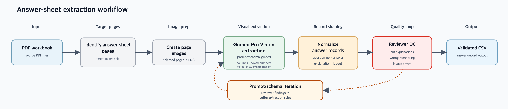

Portfolio case study · English exam content digitization
English Exam Content Digitization
Project Manager · April 2025 – August 2025 · Abby (Dahm Won) Heo
The first delivery came back half-unusable. I diagnosed the missing identifier, built the extraction pipeline and QC tooling, and recovered quality to near-zero defects.
Situation
The client contracted us to digitize content for a 200K+-item English exam question bank. PDFs were split into page-level tasks, workers tagged the content, an engineer converted the output into JSON, and the team delivered 20K–30K items every two weeks. Midway through a large-scale English exam digitization project, the previous team lead and one of the two PMs left the project. I joined as a PM while a single data engineer was supporting the data pipeline. The team had workbook JSON outputs and question-and-answer HTML renderings, but reviewers lacked a reliable way to inspect the extracted structure, source-file context, and metadata together before delivery. After the first delivery, the client said only about half of the output was usable and raised the possibility of damages. Following the previous lead’s design, half of the total scope, about 100K items, had already been tagged, and there was no transition documentation.
Diagnosis
There was no documentation of which workbooks, the client’s source PDF files, had been set up on the platform, what resolution to use when converting PDFs to PNG, or how to handle files whose editing was locked. The first delivery deadline was less than a month away.
After assessing the situation, I found two different kinds of problems.
The first was integrity. The platform had been designed so that workers tagged everything except the original question numbers, leaving no shared identifier to connect question content to answer-sheet content. On delivery days, the engineer and PMs manually compared entire PDFs just to reconcile question and answer counts. If a student saw the wrong answer or explanation attached to a question they had solved, the issue would directly damage trust in the client’s service. That made data integrity the first problem to fix, before improving delivery speed.
The second was capacity. Answer-sheet tagging had not been scoped into worker tasks, so two PMs were manually copying 200K+ items’ worth of answer keys into Excel. This structure could not support a 200K+ item delivery.
The two problems had to be solved in the right order. Capacity had to come second, because faster delivery would not help if the question-answer links were still unreliable.
Approach
Integrity chain
One option was to change worker scope so workers tagged question numbers directly. But with 100K items already completed, redesigning the platform for this would mean reworking all of it, at significant added cost. Instead, I used positional data that already existed on the platform.
The downloaded CSV of workers’ tagged output did not preserve the original printed question numbers. What it did contain was position-based data for the questions that were actually processed: each item’s processed order across the full PDF and its processed order within the page. Because duplicates, out-of-scope items, and incomplete questions were excluded, those processed-order indices did not always match the workbook’s printed numbering. I used that structure, together with workbook-level total counts and processed-item counts, to trace a mismatch from an entire delivery down to a specific workbook, page, and question position.
Once that matching structure existed, the next question became possible: did the output actually render correctly for the client? I asked the platform team to build a QC viewer, but they declined, citing limited resources. Since QC could not wait, I built one myself using Cursor AI. There was no company GitHub account, so I hosted it on my personal account, and designed it to be browser-only so data never left the local environment. This let us catch rendering defects before delivery instead of after.
Capacity chain
Answer-sheet layouts varied by publisher: single-column and two-column layouts, boxed numbers, and mixed answer/explanation formats. The task was not just OCR. Each answer-sheet entry had to be converted into structured CSV fields: its visual layout column, the answer value itself, such as a multiple-choice option number or a short-answer word or sentence, and the corresponding explanation. Basic OCR with Tesseract, an open-source text-recognition engine, could extract text, but it could not reliably separate those fields or preserve the layout relationships. I used Gemini Vision Pro, grouped similar layouts into batches, had reviewers check first-pass extraction, and fed that feedback into the next prompt/schema iteration. Manual PM copying became a repeatable pipeline.

Scale layer
Once integrity and capacity were reasonably stable, I added source tracking. I recorded which workbooks were set up on the platform, what resolution was used for PNG conversion, and how locked files were handled. This let us trace whether an error came from a worker mistake or a source-file problem and push back to the client with specific evidence instead of a general complaint. Delivering 200K+ items reliably meant controlling the source.
What Changed
After the position-based matching method was introduced, the team could reconcile question and answer counts at the workbook and page level instead of manually searching across entire deliveries. Based on client feedback, usable output quality improved from below 50% to around 85%.
In parallel, the answer-sheet extraction workflow improved through reviewer feedback on first-pass outputs. After source-file tracking and the browser QC viewer were added, the final delivery phase stabilized: the team could catch source-file, rendering, and metadata issues before final delivery, and there were no further material client complaints. The damages threat was withdrawn.
The operational change was concrete. The position-based matching method gave the team a way to localize mismatches to a workbook, page, and processed-question position. The answer-sheet workflow reduced manual PM copying by turning recurring layouts into extraction batches that reviewers could check. Source-file tracking and the browser QC viewer added the final control layer: reviewers could inspect source setup, rendered output, and metadata before final delivery.
Framing
What mattered in this project was the order of fixes. The team could not scale answer-sheet work until the question-answer matching problem was under control, and it could not defend delivery quality without a way to inspect source files, rendered questions, and metadata before final delivery.
My work sat between operations and data quality. Workers handled tagging, and a single data engineer owned the JSON-conversion pipeline. I designed the position-based matching method that connected question records to answer data, built the Gemini Vision Pro workflow for answer sheets, and created the browser QC viewer when the team needed a review surface before delivery.
I also set the recovery sequence: stabilize integrity first, then scale answer extraction, then add source-file tracking and final delivery checks. That turned missing data, process breakdown, and client escalation risk into a workflow the team could operate and defend with evidence.